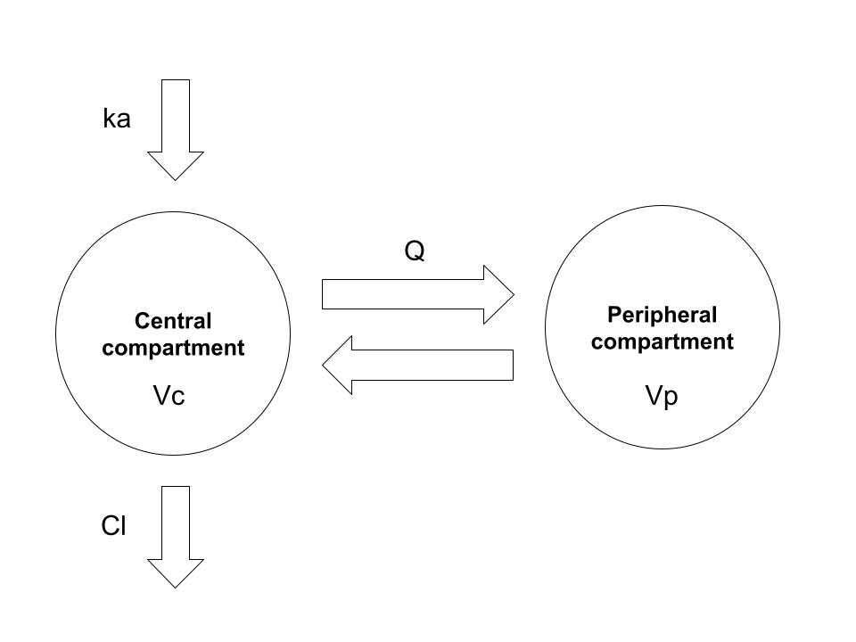
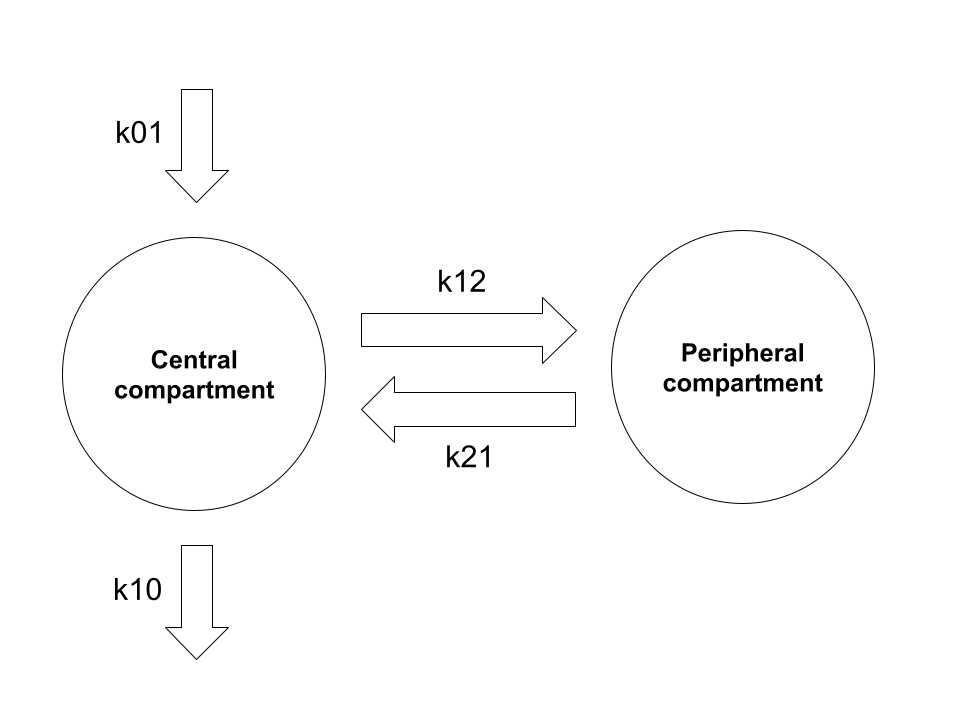
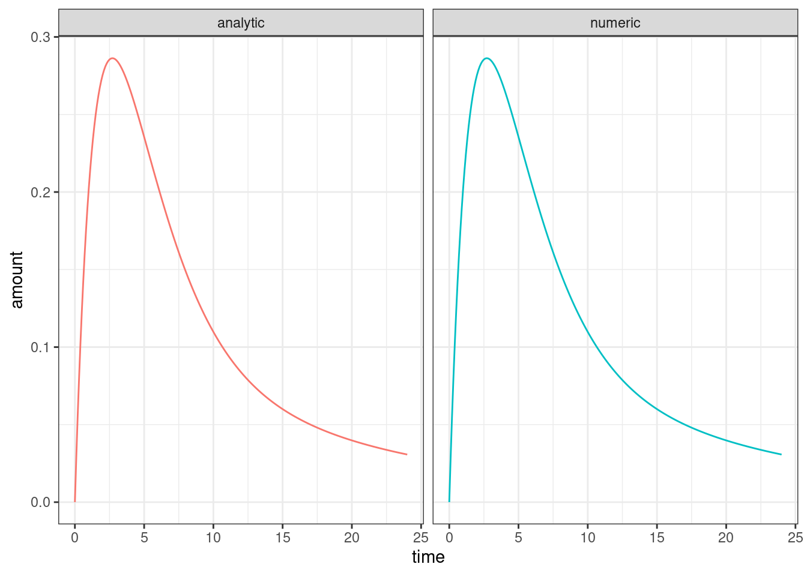

![]()
numeric_solution <- function(k01, k12, k21, k10, time) {
mod <- rxode2::rxode({
d/dt(A0) = -k01 * A0;
d/dt(A1) = k01 * A0 - (k12 + k10) * A1 + k21 * A2;
d/dt(A2) = k12 * A1 - k21 * A2;
})
inits <- c(A0 = 1, A1 = 0, A2 = 0)
ev <- rxode2::eventTable()
ev$add.sampling(time = time)
pars <- data.frame(k01 = k01, k12 = k12, k21 = k21, k10 = k10)
dat <- mod$solve(pars, ev, inits)
dat <- as.data.frame(dat)
out <- data.frame(
time = dat$time,
amount = dat$A1,
solution = "numeric"
)
return(out)
}It is late December, the office is quiet on the eve of the annual ritual of everyone vanishing into their own personal end of year vacations, and I have time to breathe and – heaven forfend – to think. As such, and in the spirit of trying to do something professionally useful during this strangely empty moment of the year, it is time for another post in my irregular and unsystematic series on pharmacometrics. Does anyone except Danielle care? Unlikely. Will it make the world a better place? Absolutely not. But neither of these has ever been a governing consideration on this blog.1
The matter at hand
The topic for today’s installment in Danielle’s ongoing public display of blog-based narcissism is deriving closed-form solutions for two-compartment pharmacokinetic (PK) models. There is absolutely nothing in the post that is not already extremely well known by pharmacometricians, and the scope of the post is somewhat narrower than the full range of two-compartment PK models. I’m mostly going to consider this model:

Here we have the garden-variety two-compartment model with first-order absorption and first-order elimination. In the usual application of this model we have a drug that is administered orally. The drug is absorbed gradually from the gut into systemic circulation (central compartment), and is gradually eliminated from the body, again from the central compartment. During the time that the drug is within the body, it does not stay solely within the blood: it is distributed through various other tissues, and so the volume over which it is distributed changes over time. In a two-compartment model the complexity of this is simplified: the drug concentration in a typical study is measured only in the central compartment (e.g., by measuring plasma concentration), and so the model does not concern itself with the fine grained details of what is happening elsewhere in the body. It is often (not always) sufficient to assume that the “other” tissues in which the drug distributes comprise a single “peripheral compartment”.
In order to attach physiologically meaningful interpretation to this model, it’s typically parameterised in terms of the following five quantities:
- Volume of distribution for the central compartment \(V_c\) refers to the volume over which the drug amount in the central compartment is assumed to be evenly distributed. It’s a fictional quantity – and can take on values that are much larger than the actual volume of blood or plasma for a variety of reasons – but it’s a convenient one.
- Volume of distribution for the peripheral compartment \(V_p\): as above but for the peripheral compartment
- Clearance \(Cl\) is the volume within the central compartment that can be completely cleared of drug per unit time, and governs the elimination of drug from the body
- Intercompartmental clearance \(Q\) governs the exchange of drug between the central and peripheral compartments
- The absorption rate constant \(k_a\) is a scaling factor used to describe the proportion of the drug amount currently in the gut that is transferred into systemic circulation at any moment in time2
This model is probably the one I come across most in my everyday work, and these are the parameters used to interpret model behaviour. However, it’s not the most convenient form to use when working with the model mathematically, so let’s rewrite it in terms that are more convenient.
A two compartment pharmacokinetic model
As in every mathematical fairy tale and religious text, we begin with some notation. The state of our system will at time \(t\) be described in terms of three quantities: \(x_{0t}\) is the drug amount in the depot compartment (generally the gut) at time \(t\) units post-dose, \(x_{1t}\) is the amount in the central compartment, and \(x_{2t}\) is the amount in the peripheral compartment. Our state vector \(\mathbf{x}_t \in \mathbb{R}^3_{\geq 0}\) is the collection of these three things, and if you care deeply about such matters you might wish to assert that the drug amounts are described by a function \(\mathbf{x}(t)\) that takes on such values:
\[ \mathbf{x}(t) = \mathbf{x}_t = (x_{0t}, x_{1t}, x_{2t}) \] In an act of perversity, however, I’m not going to use the functional notation \(\mathbf{x}(t)\) here. I’m simply going to talk about the state vector \(\mathbf{x}_t\) because honestly no-one wants to see what this post would look like if I added all those extra parentheses.
Having established this notation and – in a Barbie-like state of best-day-ever excitement – we can now describe how the state vector changes over time using a system of ordinary differential equations (ODEs):
\[ \begin{array}{rcl} \frac{d}{dt} x_{0t} & = & -k_{01} x_{0t} \\ \frac{d}{dt} x_{1t} & = & k_{01} x_{0t} - (k_{12} + k_{10}) x_{1t} + k_{21} x_{2t} \\ \frac{d}{dt} x_{2t} & = & k_{12} x_{1t} - k_{21} x_{2t} \end{array} \]
Here we have four rate constant parameters (\(k_{01}\), \(k_{10}\), \(k_{12}\), and \(k_{21}\)), each of which describes the instantaneous transfer of drug quantity from one compartment to another: the notational convention is to refer to the source compartment as the first subscript and the destination compartment as the second, so for instance \(k_{12}\) is the rate constant associated with the movement of drug from the central compartment (compartment 1) to the peripheral compartment (compartment 2). In this notation the “zero-th” compartment is an abstraction: \(k_{01}\) describes absorption (generally from the gut) and \(k_{10}\) describes elimination (generally to urine).3
Schematically, the exchange of drug amounts between the compartments in this formalism can be visualised in the following way:

Structurally you can see it’s the same as the model described at the start, and it’s not at all difficult to convert between the physiologically-interpretable parameterisation and the mathematically-convenient parameterisation using these rate constants.4 between the ODE-friendly parameterisation that uses the rate constants \(k_{01}\), \(k_{10}\), \(k_{21}\) and \(k_{12}\) and the physiologically-interpretable parameterisation.5
In matrix form we can express the ODE system as:
\[ \frac{d}{dt} \mathbf{x}_t = \mathbf{K} \mathbf{x}_t \]
where
\[ \mathbf{K} = \left[ \begin{array}{ccc} -k_{01} & 0 & 0 \\ k_{01} & -k_{12} - k_{10} & k_{21} \\ 0 & k_{12} & -k_{21} \\ \end{array} \right] \]
and our initial conditions for a dose administered orally at time \(t=0\) are:
\[ \mathbf{x}_{0} = (\mbox{dose}, 0, 0) \]
This particular parameterisation is most helpful when we want to think about the underlying ODE system, and it’s the one I’ll use for deriving solutions in this post, but when we want to interpret the models we usually rewrite it in terms of the parameters I described at the start of the post.6
Solving linear time-homogeneous ODE systems
So now we get to the part of the post where the mathematics begins to intrude. Per our model, we have a linear time-homogeneous ODE system that we want to solve, in the sense that we would like a nice algebraic expression that describes the state \(\mathbf{x}_t\) at time \(t\). Of course, I want all sorts of things in life that I can’t obtain without suffering, and this is no exception. If you want to solve a linear homogeneous ODE, you’re going to have to work with matrix exponentials, and with matrix exponentials comes pain. Especially if, like me, you vaguely remember matrix exponentials from an undergrad maths class you took 30 years ago and you actually haven’t needed to use them for anything much in the decades that followed.
Perhaps a small “refresher” will help us all then. The matrix exponential \(e^{\mathbf{K}}\) of a matrix \(\mathbf{K}\) is a quantity that is broadly analogous to its scalar equivalent \(e^k\) for scalar value \(k\), and has similar (but not identical) properties. In the same way that we can define a scalar exponential \(e^k\) via a series expansion, the matrix exponential \(e^{\mathbf{K}}\) is defined as:
\[ \begin{array}{rcl} e^{\mathbf{K}} &=& \mathbf{I} + \mathbf{K} + \frac{1}{2} \mathbf{K}^2 + \frac{1}{6} \mathbf{K}^3 + \ldots + \frac{1}{j!} \mathbf{K}^j + \ldots \\ &=& \sum_{j = 0}^\infty \frac{1}{j!} \mathbf{K}^j \end{array} \]
Some handy properties for matrix exponentials, most of which we’ll need:
- If \(\mathbf{K}\) is a matrix of zeros, \(e^{\mathbf{K}} = 1\)
- If \(\mathbf{K}\) is the identity \(\mathbf{I}\), \(e^{\mathbf{K}} = e^{\mathbf{I}} = \mathbf{I}\)
- If \(t\) is a scalar, \(e^{t\mathbf{K}} = e^t e^\mathbf{K}\)
- If \(m\) and \(n\) are scalars, \(e^{m\mathbf{K}} e^{n \mathbf{K}} = e^{(m + n)\mathbf{K}}\)
- If \(\mathbf{D} = \mbox{diag}(d_1, d_2, \ldots)\) is a diagonal matrix, \(e^\mathbf{D}\) is the diagonal matrix \(e^\mathbf{D} = \mbox{diag}(e^{d_1}, e^{d_2}, \ldots)\)
- The derivative is analogous to the scalar case, \(\frac{d}{dt} e^{t \mathbf{K}} = \mathbf{K} e^{t \mathbf{K}}\)
- For an invertible matrix \(\mathbf{H}\) such that \(\mathbf{K} = \mathbf{HMH^{-1}}\), \(e^{t\mathbf{K}} = \mathbf{H} e^{t \mathbf{M}} \mathbf{H^{-1}}\)
On the basis of the derivative property above, it’s immediately clear that the solution to our ODE system is going to take the following form:7
\[ \mathbf{x}_t = e^{t \mathbf{K}} \mathbf{x}_0 \]
Seeing that this is the form of the solution is the easy part. The hard part, of course, is finding the expression that describes the matrix exponential \(e^{t\mathbf{K}}\). Fortunately, this is something that cleverer people than I have already thought about, and in any case the properties of matrix exponentials suggest a general strategy for such problems:
- Find the eigenvalues \(\lambda_1, \lambda_2, \ldots\), for the matrix \(\mathbf{K}\)
- Find the corresponding eigenvectors \(\mathbf{u}_1, \mathbf{u}_2, \ldots\)
- Construct the matrix \(\mathbf{U} = [\mathbf{u}_1, \mathbf{u}_2, \ldots]\) with the eigenvectors as columns, and diagonal matrix \(\mathbf{\Lambda}\) whose diagonals correspond to eigenvalues, and invert it to obtain \(\mathbf{U}^{-1}\)
- Noting that we have the eigendecomposition \(K = \mathbf{U \Lambda U^{-1}}\), rewrite \(e^{t\mathbf{K}} = \mathbf{U} e^{t\mathbf{\Lambda}} \mathbf{U^{-1}}\)
- Since \(\mathbf{\Lambda}\) is diagonal, \(e^{t\mathbf{\Lambda}}\) is straightforward, and we can calculate \(e^{t\mathbf{K}}\) by matrix multiplication
Okay then. Much like the Cylons, we have a Plan.8
Solve a simpler problem
As Jane Austen famously said, “it is a truth universally acknowledged, that a woman in possession of a three-state ODE system must be in want of a two-state ODE that is easier to solve”. And so it is here. Rather than try to work with the model as described, I’ll start with a simpler model (one that is itself quite useful) that will be easier to solve, and whose solution will make it massively easier to solve the full system. And so it is that our first step will be to retreat from a two-compartment model with oral dosing to a two-compartment model with bolus IV dosing.
In most cases I’ve come across in my pharmacometric work so far, the drug we’re modelling is orally administered, and the model with first-order absorption into the central compartment described above (or some variation thereof) is the one we want to use. However, it’s convenient to start with a simpler case where the drug is administered by a bolus IV dose, and of course this scenario does arise in real life. In this scenario there is no depot compartment, and entire dose appears in the central compartment at \(t = 0\). Or, to frame it in technical terms, we have zero-order absorption into the central compartment rather than first-order absorption. Again assuming first-order elimination, \(\mathbf{K}\) is now a simpler 2x2 matrix.9 In this situation our state vector consists only of the central and peripheral compartments:
\[ \mathbf{x}(t) = \mathbf{x}_t = (x_{1t}, x_{2t}) \]
Our state transition matrix is now this:
\[ \mathbf{K} = \left[ \begin{array}{cc} -k_{12} - k_{10} & k_{21} \\ k_{12} & -k_{21} \\ \end{array} \right] \]
and our initial state at time \(t=0\) is:
\[ \mathbf{x}_{0} = (\mbox{dose}, 0) \]
As before, our solution will be of the form
\[ \mathbf{x}_t = e^{t \mathbf{K}} \mathbf{x}_0 \]
and we can find this solution by following the general strategy outlined earlier. To that end, I’ll begin by finding the eigenvalues \(\lambda\) that satisfy \(\det(\mathbf{K} - \lambda \mathbf{I}) = 0\). Well, technically speaking, I’ll begin by taking a little trip down memory lane to 1994 and my first-year undergraduate maths classes, but I’ll spare you that traumatic recollection and jump straight to the derivation:
\[ \begin{array}{rcl} \det(\mathbf{K} - \lambda \mathbf{I}) &=& \det \left[ \begin{array}{cc} -k_{12} - k_{10} - \lambda & k_{21} \\ k_{12} & -k_{21} - \lambda \\ \end{array} \right] \\ &=& (-k_{12} - k_{10} - \lambda)(-k_{21} - \lambda) - k_{12} k_{21} \\ &=& \lambda^2 + (k_{10} + k_{12} + k_{21}) \lambda + k_{10} k_{21} \end{array} \] The final expression doesn’t factorise into anything very pretty, so it’s conventional to simply define new variables \(\alpha\) and \(\beta\) such that:
\[ \begin{array}{rcl} \alpha \beta & = & k_{10} k_{21} \\ \alpha + \beta & = & k_{10} + k_{12} + k_{21} \end{array} \]
when written in these new variables, which were constructed specifically to make an expression that factorises easily, the left hand side of our characteristic equation turns out to be shockingly simple to factorise:
\[ \det(\mathbf{K} - \lambda \mathbf{I}) = \lambda^2 + (\alpha + \beta) \lambda + \alpha \beta = (\lambda + \alpha)(\lambda + \beta) \]
Wonders will never cease. In any case, when written in these terms, our two eigenvalues are \(\lambda = -\alpha\) and \(\lambda = -\beta\). This is – of course – a pure notational convenience since \(-\alpha\) and \(-\beta\) were defined such that they would end up begin the eigenvalues, but it’s worth mentioning this because these are the exact variables that show up in various software systems (e.g., NONMEM) and textbooks. Nevertheless, it’s still no good to us if we don’t go through tedious business of applying the quadratic formula to express \(\alpha\) and \(\beta\) in terms of \(k_{01}\), \(k_{10}\), \(k_{12}\), and \(k_{21}\). So here it is:
\[ \begin{array}{rcl} \alpha, \beta &=& \displaystyle\frac{(\alpha + \beta) \pm \sqrt{(\alpha + \beta)^2 - 4\alpha \beta}}{2} \\ &=& \displaystyle\frac{(k_{10} + k_{12} + k_{21}) \pm \sqrt{(k_{10} + k_{12} + k_{21})^2 - 4k_{10} k_{21}}}{2} \end{array} \]
Now that we have the eigenvalues, we proceed to the eigenvectors. For each eigenvalue \(\lambda\) there is a corresponding eigenvector \(\mathbf{u}\) such that \((\mathbf{K} - \lambda \mathbf{I}) \mathbf{u} = \mathbf{0}\). In our case:
\[ \left[ \begin{array}{cc} -k_{12} - k_{10} - \lambda & k_{21} \\ k_{12} & -k_{21} - \lambda \\ \end{array} \right] \left[ \begin{array}{c} u_1 \\ u_2 \end{array} \right] = \left[ \begin{array}{c} 0 \\ 0 \end{array} \right] \]
If this were a bigger matrix we’d probably use Gauss-Jordan elimination to construct the row-reduced echelon form (RREF) and then read off the solutions using the RREF. That’s kind of overkill in this case because – let’s be brutally honest here – you can look at the bottom row and guess that the solution is going to have the form \(u_1 = k_{21} + \lambda\), \(u_2 = k_{12}\).
To convince ourselves that this is the correct solution, we’ll substitute it into both rows and see that, shockingly, we end up with zero. We’ll start with the bottom row because that was the one we used to guess the solution:
\[ \begin{array}{rcl} k_{12} u_1 + (-k_{21} - \lambda) u_2 &=& k_{12} (k_{21} + \lambda) + (-k_{21} - \lambda) k_{12} \\ &=& 0 \end{array} \]
I mean. Of course that was going to work. We literally chose expressions for \(u_1\) and \(u_2\) that would cause the two terms to cancel out. The actual test of our guess arrives when we try the same thing with the top row. This time it’s takes a little more effort:
\[ \begin{array}{rcl} (-k_{12} - k_{10} - \lambda) u_1 + k_{21} u_2 &=& (-k_{12} - k_{10} - \lambda) (k_{21} + \lambda) + k_{21} k_{12} \\ &=& -k_{12} k_{21} - k_{10} k_{21} - \lambda k_{21} - k_{12} \lambda - k_{10} \lambda - \lambda^2 + k_{21} k_{12} \\ &=& - k_{10} k_{21} - \lambda k_{21} - k_{12} \lambda - k_{10} \lambda - \lambda^2 \\ &=& - k_{10} k_{21} - (k_{21} + k_{12} + k_{10}) \lambda - \lambda^2 \\ &=& - \alpha \beta - (\alpha + \beta) \lambda - \lambda^2 \\ &=& - (\lambda + \alpha) (\lambda + \beta) \\ \end{array} \]
Once we have arrived at this expression, it’s clear that our guess is correct. The only two values that \(\lambda\) can take are the eigenvalues \(\lambda = -\alpha\) and \(\lambda = -\beta\), and both of those yield a value of zero. So our guess was indeed correct and we have our eigenvectors. Awesome.10
Now that we are in possession of eigenvalues and eigenvectors we can construct the matrices \(\mathbf{U}\) and \(\mathbf{\Lambda}\) that will give us the eigendecomposition \(\mathbf{K} = \mathbf{U \Lambda U}^{-1}\). Here they are:
\[ \begin{array}{rcl} \mathbf{\Lambda} &=& \left[ \begin{array}{cc} -\alpha & 0 \\ 0 & -\beta \end{array} \right] \\ \mathbf{U} &=& \left[ \begin{array}{cc} k_{21} -\alpha & k_{21} - \beta \\ k_{12} & k_{12} \end{array} \right] \end{array} \]
The last thing we need is the inverse \(\mathbf{U}^{-1}\), which is also fairly easy to derive. It’s a 2x2 matrix, after all, and inverting a 2x2 matrix isn’t even undergrad level maths: they taught us that one in high school. Noting first that determinant \(\det \mathbf{U}\) is as follows,
\[ \det \mathbf{U} = (k_{21} - \alpha) k_{12} - k_{12} (k_{21} - \beta) = k_{12} (\beta - \alpha) \]
we then write down the inverse as follows:
\[ \mathbf{U}^{-1} = \frac{1}{k_{12}(\beta - \alpha)} \left[ \begin{array}{cc} k_{12} & \beta - k_{21} \\ -k_{12} & k_{21} -\alpha \end{array} \right] \]
So now we have \(\mathbf{U}\), \(\mathbf{U}^{-1}\), and \(\mathbf{\Lambda}\), and we could proceed straight to doing the matrix multiplication but for the sake of what is left of my sanity I’m going to simplify my notation a bit and define two new constants \(a\) and \(b\):
\[ \begin{array}{rcl} a & = & (k_{21} - \alpha) / k_{12} \\ b & = & (k_{21} - \beta) / k_{12} \end{array} \]
With the help of these two constant, the expressions for \(\mathbf{U}\) and \(\mathbf{U}^{-1}\) are now considerably less unpleasant on the eye:
\[ \begin{array}{rcl} \mathbf{U} &=& k_{12} \left[ \begin{array}{cc} a & b \\ 1 & 1 \end{array} \right] \\ \mathbf{U}^{-1} &=& \displaystyle\frac{1}{\beta - \alpha} \left[ \begin{array}{cc} 1 & -b \\ -1 & a \end{array} \right] \end{array} \]
Now that we have the eigendecomposition \(\mathbf{K} = \mathbf{U \Lambda U}^{-1}\), we can solve our matrix exponential. Using the last of the matrix exponential properties in the potted list I provided earlier in the pose, we can express the matrix exponential \(e^{t \mathbf{K}}\) as the matrix product \(\mathbf{U} e^{t \mathbf{\Lambda}} \mathbf{U}^{-1}\). Conveniently, \(\Lambda\) is a diagonal matrix which makes \(e^{t \mathbf{\Lambda}}\) trivially easy, and so we obtain this:11
\[ \begin{array}{rcl} e^{t \mathbf{K}} & = & \mathbf{U} e^{t \mathbf{\Lambda}} \mathbf{U}^{-1} \\ & = & \displaystyle\frac{k_{12}}{\beta - \alpha} \left[ \begin{array}{cc} a & b \\ 1 & 1 \end{array} \right] \left[ \begin{array}{cc} e^{-\alpha t} & 0 \\ 0 & e^{-\beta t} \end{array} \right] \left[ \begin{array}{cc} 1 & -b \\ -1 & a \end{array} \right] \\ & = & \displaystyle\frac{k_{12}}{\beta - \alpha} \left[ \begin{array}{cc} a e^{-\alpha t} & b e^{-\beta t} \\ e^{-\alpha t} & e^{-\beta t} \end{array} \right] \left[ \begin{array}{cc} 1 & -b \\ -1 & a \end{array} \right] \\ &=& \displaystyle\frac{k_{12}}{\beta - \alpha} \left[ \begin{array}{cc} (a e^{-\alpha t} - b e^{-\beta t}) & -ab (e^{-\alpha t} - e^{-\beta t}) \\ -(e^{-\alpha t} - e^{-\beta t}) & (-b e^{-\alpha t} + a e^{-\beta t}) \end{array} \right] \end{array} \]
So now we can turn to our solution:
\[ \begin{array}{rcl} \mathbf{x}_t & = & e^{t \mathbf{K}} \ \mathbf{x}_0 \\ & = & \displaystyle\frac{k_{12}}{\beta - \alpha} \left[ \begin{array}{cc} (a e^{-\alpha t} - b e^{-\beta t}) & -ab (e^{-\alpha t} - e^{-\beta t}) \\ -(e^{-\alpha t} - e^{-\beta t}) & (-b e^{-\alpha t} + a e^{-\beta t}) \end{array} \right] \left[ \begin{array}{cc} \mbox{dose} \\ 0 \end{array} \right] \\ & = & \mbox{dose} \times \displaystyle\frac{k_{12}}{\beta - \alpha} \left[ \begin{array}{cc} a e^{-\alpha t} - b e^{-\beta t} \\ e^{-\alpha t} - e^{-\beta t} \end{array} \right] \end{array} \] Recalling that the central compartment corresponds to the first element of the state vector (top row), we can focus on this and compute the drug amount (not concentration) in the central compartment at time \(t\):
\[ \begin{array}{rcl} x_{1t} &=& \mbox{dose} \times \displaystyle\frac{k_{12}}{\beta - \alpha} \times \left( a e^{-\alpha t} - b e^{-\beta t} \right) \\ &=& \mbox{dose} \times \displaystyle\frac{k_{12}}{\beta - \alpha} \times \left( \left(\frac{k_{21} - \alpha}{k_{12}} \right) e^{-\alpha t} - \left(\frac{k_{21} - \beta}{k_{12}} \right) e^{-\beta t} \right) \\ &=& \mbox{dose} \times \left( \left(\displaystyle\frac{\alpha - k_{21}}{\alpha - \beta} \right) e^{-\alpha t} - \left(\displaystyle\frac{\beta - k_{21}}{\alpha - \beta} \right) e^{-\beta t} \right) \\ &=& \mbox{dose} \times \left(A e^{-\alpha t} + B e^{-\beta t} \right) \end{array} \]
and thus we have a model that can be expressed as a sum of two exponentials where:
\[ \begin{array}{rcl} A & = & \displaystyle\frac{\alpha - k_{21}}{\alpha - \beta} \\ \\ B & = & \displaystyle\frac{\beta - k_{21}}{\alpha - \beta} \end{array} \]
If I’m being completely honest, it’s precisely this biexponential12 form that motivated me to suck it up and derive the solution myself. One of the textbooks I was reading at work – in order to familiarise myself with some of the pharmacokinetic background that I need – introduced the two-compartment model by defining it formally in terms of this biexponential expression,13 but then drew this model schematically using a state-transition diagram similar to the ones I used at the start of this post. I was baffled, because it was not at all obvious to me from inspection how the diagram and the equation were linked, and the book did not present a derivation.
So yes, as with most things I do on this blog, my true motivation was in fact pig-headed stubbornness. I’m terribly bad at taking certain things on faith, and felt a deep – and let’s be honest, pathological – need to derive the solution myself. It is the very essence of spite-driven mathematics.
Returning to the original problem
Now that we have a closed form solution for a two-compartment model with zero-order absorption into the central compartment (i.e., bolus IV dosing), we can return to the oral dosing model (assuming first-order absorption) that we started with. It’s a relatively straightforward solution at this point since we have a continuous influx from the gut, so we can convolve this time-dependent influx with the zero-order solution. Since I’m assuming bioavailability \(F = 1\) for this post14 I’ll happily act as if the drug amount arriving in the central compartment from the gut at time \(t\) is the same as the amount that left the gut at time \(t\):
\[ -\frac{d}{dt} x_{0t} = \mbox{dose} \times k_{01} \times e^{-k_{01} t} \]
Thus the drug amount in the central compartment at time \(t\) is given:
\[ \begin{array}{rcl} x_{1t} &=& \mbox{dose} \times k_{01} \times \displaystyle\int_0^t e^{-k_{01} u} \left( A e^{-\alpha (t-u)} + B e^{-\beta (t-u)} \right) \ du \\ &=& \mbox{dose} \times k_{01} \times \displaystyle\int_0^t A e^{-\alpha (t-u) -k_{01} u} + B e^{-\beta (t-u) -k_{01} u} \ du \\ &=& \mbox{dose} \times k_{01} \times \left( Ae^{-\alpha t} \left[ \frac{1}{\alpha - k_{01}} e^{(\alpha - k_{01})u} \right]_0^t + Be^{-\beta t} \left[ \frac{1}{\beta - k_{01}} e^{(\beta - k_{01})u} \right]_0^t \right) \\ &=& \mbox{dose} \times k_{01} \times \left( \displaystyle\frac{Ae^{-\alpha t} (e^{(\alpha - k_{01})t} - 1)}{\alpha - k_{01}} + \displaystyle\frac{Be^{-\beta t} (e^{(\beta - k_{01})t} - 1)}{\beta - k_{01}} \right) \\ \end{array} \]
And just like that we have a solution.
Does it work?
I’m not so arrogant as to simply assume I got it right. It’s reassuring that all the expressions that came out along the way bear a striking resemblance to those I’ve seen in the textbooks, but I still want to compare to a numerical method that I trust. In an earlier post I talked about using the rxode2 package to simulate from pharmacokinetic models, and while I could certainly use some other tool for this purpose (e.g., the deSolve package would be totally fine here) I might as well use rxode2 here as well. Here’s an R function that solves the problem numerically:
Here’s the corresponding function implementing the analytic solution:
analytic_solution <- function(k01, k12, k21, k10, time) {
ks <- k10 + k12 + k21
alpha <- (ks + sqrt(ks^2 - (4 * k10 * k21))) / 2
beta <- (ks - sqrt(ks^2 - (4 * k10 * k21))) / 2
A <- (alpha - k21) / (alpha - beta)
B <- -(beta - k21) / (alpha - beta)
A_term <- A * exp(-alpha * time) * (exp(time * (alpha - k01)) - 1)
B_term <- B * exp(-beta * time) * (exp(time * (beta - k01)) - 1)
A_term <- A_term * k01 / (alpha - k01)
B_term <- B_term * k01 / (beta - k01)
out <- data.frame(
time = time,
amount = A_term + B_term,
solution = "analytic"
)
return(out)
}Now let’s compare the two:
k01 <- .3
k12 <- .2
k21 <- .1
k10 <- .3
time <- seq(0, 24, .1)
dat_numb <- numeric_solution(k01, k12, k21, k10, time)
dat_anal <- analytic_solution(k01, k12, k21, k10, time)
dat <- rbind(dat_numb, dat_anal)
library(ggplot2)
ggplot(dat, aes(time, amount, colour = solution)) +
geom_line(show.legend = FALSE) +
facet_wrap(~solution) +
theme_bw()
Looks good to me? The differences between the two are small enough that we can attribute them to simulation precision etc…
max(abs(dat_numb$amount - dat_anal$amount))[1] 1.920889e-08…and yes, you get similar agreement between the two versions15 if you feed in other parameter values. That’s good enough for me.
Was it worth it?
And so we come to the end. The problem is solved, Danielle has convinced herself that she understands the formalism properly, and a great many pieces of scrap paper were sacrificed to the dark gods of mathematics in the process. Was it all worthwhile? I mean… in one sense, probably not. The analytic solutions I’ve derived here are highly unoriginal, and of course they have already been implemented and incorporated into standard modelling tools used in pharmacometric modelling. Nothing new has been added to the world by me doing this. But also, it’s worth highlighting that it was a very good thing that these solutions exist thanks to the hard work of those that have come before us,16 because they do make a massive difference in terms of computational performance:
microbenchmark::microbenchmark(
numeric_solution(k01, k12, k21, k10, time),
analytic_solution(k01, k12, k21, k10, time)
)Unit: microseconds
expr min lq mean median uq max neval
numeric_solution(k01, k12, k21, k10, time) 36942.567 39292.0655 43605.2781 41941.764 45527.6240 68079.242 100
analytic_solution(k01, k12, k21, k10, time) 141.298 166.7515 248.3604 177.763 230.7435 5089.839 100The units here are microseconds, so yeah okay they’re both fast. They’re both fast enough that I have no reason at all to care when running a small simulation: RK45 and BDF exist for a reason, and as Dan Simpson reminded me the other day, generations of numerical analysts have suffered so that I don’t have to.
However, a speedup of a this magnitude makes a very big difference in the context of model fitting. Even my lazy R implementation of the analytic solution is hundreds of times faster than the very efficient numerical solution implemented by rxode2, and of course the speed up would be even more extreme if I could be bothered writing it in a compiled language like C++ or Rust or whatever. But of course I have no need to do that because that’s already been done in software. All I really care about for this post is deriving the solution and verifying that it works.
I’ve suffered enough.
Resources
Open access resources:
- Alex Best has an open textbook Introducing Mathematical Biology, and chapter 20 derives the solution for the two-compartment bolus IV model. It doesn’t go into quite as much detail as I do in this post (it spares the reader from the pain of matrix exponentials, for example) but I found it very helpful.
- Jiří Lebl and Trefor Bazett have an open resouce Introduction to Differential Equations whose section on matrix exponentials I found useful when trying to “refresh my memory” (i.e., learn something that I kind of ignored 30 years ago when it came up in my undergrad maths classes). Relatedly, the list of properties for matrix exponentials is mostly sourced from the wikipedia page on matrix exponentials.
Other resources:
- It’s not open access, and it doesn’t dive into the derivations, but one of the books I’ve been reading at work is Pharmacokinetic and Pharmacodynamic Data Analysis (2nd ed) by Johan Gabrielsson and Daniel Weiner: chapter 2 presents the bi-exponential model using the “macro” parameters (\(A\), \(B\), \(\alpha\), \(\beta\)) and the formulas for converting to the “micro” parameters (the fractional rate constants \(k_{01}\), \(k_{10}\), \(k_{21}\), \(k_{12}\)), along with the more general scientific considerations around the model.
- The other book I’m reading at work is Introduction to Population Pharmacokinetic / Pharmacodynamic Analysis with Nonlinear Mixed Effects Models by Joel S. Owen and Jill Fiedler-Kelly. It provides a good coverage of compartmental models in the context of the NONMEM software package, and is somewhat relevant insofar as the different parameterisations (i.e., TRANS subroutines17) for the ADVAN3 and ADVAN4 subroutines appear in this post (and make more sense to me now that I’ve derived the solutions).
Footnotes
If she were to only write posts when she thought someone cared or when it would somehow improve the state of world affairs, she’d never write anything at all. No, she writes blog posts for the same reason twinks make sex tapes in senate hearing rooms: for the pure and unsullied chaos of the thing itself.↩︎
This is of course not quite true: for simplicity I’m not considering bioavailability in this post, nor am I considering lag time. I’m certainly not considering transit compartments and the like. The focus of the post is about the ODE system used to model what happens to the drug once it arrives in systemic circulation.↩︎
By convention we also don’t count the “depot” compartment (usually the gut) as one of the compartments: although the state \(\mathbf{x}_t\) is a vector of length 3, only two of the compartments (central and peripheral) are used to model the disposition (a term of art referring to both “distribution” and “elimination”) of the drug, so this is a two-compartment model.↩︎
Yes, I do realise that there are 4 rate constants and 5 physiological parameters. In the rate-constants version there would also be a fifth parameter: when fitting models we need a volumetric scaling parameter to convert between drug amount and drug concentration in the central compartment (where the concentration is typically measured), and as such we would include \(V_c\) as a parameter in the rate-constant version too. I’ve omitted that in this post for the same reason I have ignored the bioavailability \(F\) and the lag time to absorption: none of these parameters are super-relevant to solving the ODE. \(V_c\) and \(F\) are both scaling factors that multiply various terms by a constant factor, the lag-time is a shift parameter applied to \(t\). None of them affect the general form of the solution, which is the thing I care about for the purposes of the post.↩︎
For example, to obtain the rate constants from the physiological parameters, we use \(k_{10} = Cl / V_c\), \(k_{01} = k_a\), \(k_{12} = Q/V_c\), and \(k_{21} = Q/V_p\). It’s pretty similar going the other way.↩︎
In the Gabrielsson and Weiner textbook I’m reading at work, the parameterisation in terms of the fractional rate constants \(k_{01}\), \(k_{10}\), \(k_{21}\) and \(k_{12}\) is referred to as the “micro-” parameterisation, taking its name from the fact that the parameters describe the low-level operation of the ODE. This is in contrast to the “physiological” parameterisation in terms of \(Cl\), \(Q\), \(V_c\), \(V_p\) and \(k_a\) that attempts to ascribe biological interpretation to the quantities. There is also a third “macro-” parameterisation in terms of \(\alpha\), \(\beta\), \(A\), and \(B\) in which the parameters correspond to the coefficients of the concentration-time curve. As we’ll see later in the post, something like the “macro-” parameterisation you see in the textbooks emerges more or less naturally from the solution to the ODE system. The version that shows up in this post isn’t 100% identical to the version in the textbook (it’s off by a scaling factor because I don’t bother to account for \(V_c\) or to fold the dose into the coefficients \(A\) and \(B\)) but honestly nobody should care about this because the macro-scale parameterisation doesn’t have any scientific meaning. It’s just a convenient description of a biexponential curve that makes you sound fancy at very boring parties when you tell people that the exponents are eigenvalues of the ODE.↩︎
Yes, I know. If I were being rigorous here I’d be precise about how I ended up with this as the exact expression, but I am tired and this is neither a journal article nor a textbook.↩︎
As has been so often noted in the BSG fandom, the Cylons quite clearly did not have a Plan. The writers did not ever think of a coherent Plan, and badly tried to retcon a Plan onto the plot in the TV movie by the same name. As Mike Moore later explained, it was just something that looked cool in the opening credits. Much the same could be said for me pretending I ever have a plan when trying to derive something: the Plan is the thing you make up after the fact after you accidentally end up with the answer.↩︎
Formally speaking, I suppose I ought to be using subscripts to distinguish the 3x3 oral-dosing matrix \(\mathbf{K}_{o}\) from the 2x2 bolus IV dosing matrix \(\mathbf{K}_{iv}\), but I’ll refrain from doing so in this post because it’s always clear from context which one I’m referring to.↩︎
For extremely specific values of “awesome”.↩︎
No I do not know why those stray
$$fences are showing up in the rendered document. The equations are as-intended, but those should not be included in the output. I kinda think I might have broken the parser with my extremely ugly latex, which is normally a thing I only expect to get told at kink parties↩︎Where of course a biexponential is a model that is sexually attracted to two exponents.↩︎
Technically – per. my. earlier. footnote – the one in the book differed from this one by a multiplicative scale factor since it was expressed in terms of concentrations, but whatever. That’s not germane to the post.↩︎
I mean, multiplying everything by \(F\) is not exactly difficult right? If you can follow the rest of this solution you absolutely know how to generalise it to other values of \(F\). But okay, if you care deeply about the niceties I will be like Bart and say the line: without loss of generality, I set \(F=1\) in this post. I’m sure that makes everyone happier.↩︎
Yes those variable names were deliberate. Of course those variable names were deliberate, whose blog do you think you are reading girl? Now, let’s review our safety tips for numbing lubric…↩︎
She pauses, wondering if this is the right moment to link to her favourite Lily Allen song? Yes, it is.↩︎
Technically speaking they only count as trans subroutines in the UK legal system if they have a fortran recognition certificate and a permission slip from a doctor that despises them.↩︎
Reuse
Citation
BibTeX citation:
@online{navarro2023,
author = {Navarro, Danielle},
title = {Closed Form Solutions for a Two-Compartment Pharmacokinetic
Model},
date = {2023-12-19},
url = {https://blog.djnavarro.net/posts/2023-12-19_solving-two-compartment-pk-models},
langid = {en}
}
For attribution, please cite this work as: